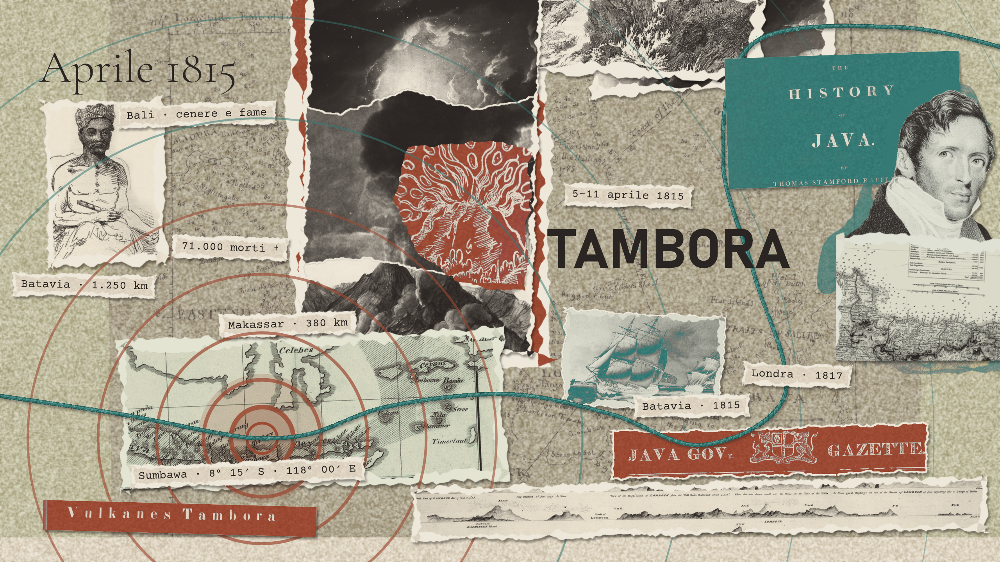
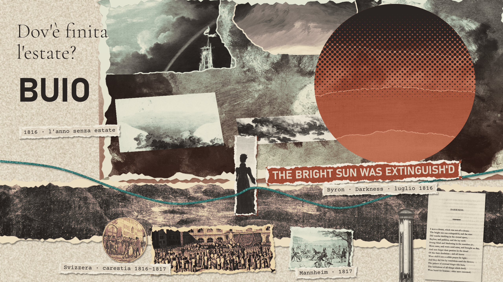
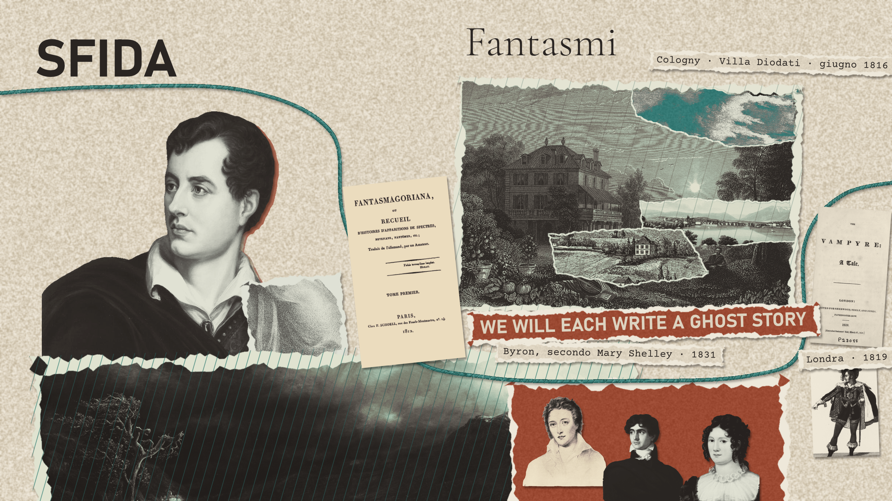
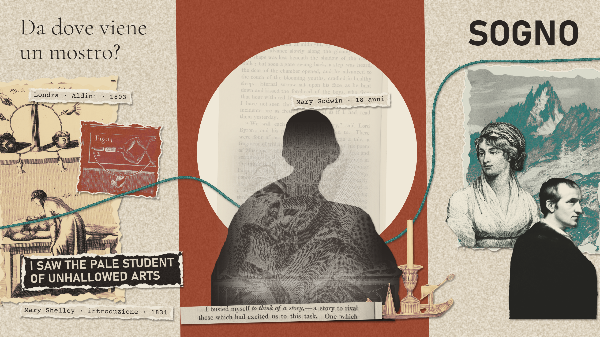

01 / 05
Chi l’ha scritto?
Il primo gennaio 1818 esce a Londra Frankenstein; or, The Modern Prometheus. La tiratura iniziale è di cinquecento copie, distribuite in tre volumi. Il frontespizio riporta il titolo, l’editore e alcuni versi del poeta inglese John Milton. Il nome dell’autrice manca. Mary Shelley ha vent’anni; ne aveva diciotto quando ha cominciato a immaginare la storia. Shelley-Godwin Archive, cronologia
Quella notte di novembre appartiene al romanzo. Victor Frankenstein è un giovane studioso che vuole scoprire il principio della vita e arriva a costruire un essere umano. La nascita della creatura dovrebbe coronare la sua ricerca. Invece Victor ne prova subito disgusto e terrore. La lascia a se stessa, incapace di riconoscere nel risultato del proprio lavoro qualcuno di cui occuparsi. Il problema che Mary svilupperà è già presente: un successo scientifico può coincidere con un fallimento umano. Frankenstein, testo del 1823, vol. I
Un nome per il creatore
Frankenstein è il cognome di Victor e della sua famiglia. La creatura non riceve un nome proprio: viene indicata con parole che esprimono soprattutto la reazione di chi la guarda. Anche quando riuscirà a parlare e a raccontare la propria esperienza, dovrà farlo dentro una relazione che il suo creatore ha già rifiutato. Possiamo leggere in questa assenza di nome una prima forma di esclusione: Victor l’ha fatta esistere, ma non le ha dato un posto fra gli altri.
Il sottotitolo, Il moderno Prometeo, allarga il problema. Nella tradizione mitologica greca, Prometeo sottrae il fuoco agli dèi per offrirlo agli esseri umani e viene punito. Victor cerca a sua volta di impadronirsi di un potere che supera i limiti ordinari dell’uomo. Nel romanzo, però, le conseguenze della trasgressione ricadono anche su chi non l’ha scelta: la creatura e le persone vicine allo studioso.
Anche i versi di Milton orientano la lettura. Provengono dal Paradiso perduto, il poema sulla caduta di Satana e sulla perdita dell’Eden. È Adamo a domandare al suo creatore se gli abbia mai chiesto di essere tratto dall’argilla. La domanda precede la storia di Victor e vi ritorna sotto un’altra forma: essere stati creati significa dover accettare qualunque vita ci venga imposta? Frankenstein, edizione del 1818
Il libro del 1818 e il ricordo del 1831
Il nome di Mary compare sul frontespizio dell’edizione inglese del 1823. Nel 1831 il romanzo esce nuovamente, riveduto e accompagnato da un’introduzione in cui l’autrice spiega come le sia venuta l’idea. È da quel testo che conosciamo la sfida fra amici e la visione dello studente accanto al corpo appena animato. Mary racconta un’esperienza di quindici anni prima: leggiamo una ricostruzione autobiografica, scritta da un’autrice ormai consapevole della fortuna del proprio libro. Edizione del 1823, introduzione del 1831
Le due date non indicano soltanto pubblicazioni diverse. Il testo del 1831 contiene numerose revisioni rispetto a quello del 1818; per studiare la genesi del romanzo bisogna distinguere la prima versione, i manoscritti e il racconto successivo della sua nascita. I quaderni conservati permettono di vedere il lavoro sulla pagina, mentre l’introduzione dà a quel lavoro una storia da ricordare. Charles E. Robinson, introduzione ai quaderni di Frankenstein
Un esempio concreto riguarda Elizabeth Lavenza, la giovane che cresce con Victor e diventerà sua moglie. Nel 1818 è sua cugina; nel 1831 è una bambina di un’altra famiglia, accolta dai genitori di Victor. Il cambiamento modifica la storia degli affetti in cui lui si forma. Quando leggiamo Frankenstein, quindi, l’anno dell’edizione può riguardare anche le relazioni fra i personaggi, oltre alla presenza o meno dell’introduzione. Testo del 1818, testo del 1831
Nel ricordo di Mary torna una pioggia insistente. Lei e i suoi amici sono in Svizzera e passano molto tempo in casa. Per capire quell’estate, bisogna risalire all’aprile del 1815, quando sull’isola indonesiana di Sumbawa comincia un’eruzione destinata ad avere conseguenze lontanissime.

02 / 05
Aprile 1815
Il Tambora si trova a Sumbawa, nell’odierna Indonesia. Il 5 aprile 1815 una grande esplosione annuncia la fase più violenta dell’eruzione, che raggiunge il culmine fra il 10 e l’11 aprile. A centinaia di chilometri di distanza i boati sono abbastanza forti da sembrare colpi di cannone. David Pyle, European Geosciences Union
Thomas Stamford Raffles, allora governatore britannico di Giava, raccoglie testimonianze di truppe inviate verso un presunto attacco e di imbarcazioni partite alla ricerca di navi in difficoltà. I resoconti confluiranno nella sua History of Java, pubblicata nel 1817. Prima ancora di conoscere l’origine di quel rumore, chi lo sente cerca di interpretarlo attraverso eventi familiari: una battaglia, un segnale di soccorso. Raffles, The History of Java, vol. I
Nei pressi del vulcano l’eruzione distrugge gli abitati e rende impossibile proseguire la vita di prima. Cenere e materiali incandescenti colpiscono le comunità; la perdita dei raccolti e la fame prolungano la catastrofe oltre le esplosioni. Il bilancio umano viene ricostruito attraverso testimonianze e stime, che non coincidono. La cifra di circa 71.000 morti comprende anche le conseguenze successive, e non va letta come un conteggio esatto. Guinness World Records, bilancio dell’eruzione, Clive Oppenheimer, studio sulle conseguenze del Tambora
Una catastrofe locale, conseguenze lontane
Nel seguire il percorso che conduce a Frankenstein, è facile ridurre il Tambora a un antefatto spettacolare. Per le popolazioni investite dall’eruzione, però, la storia riguarda la distruzione delle case, la perdita del cibo e la sopravvivenza. Il legame con un romanzo europeo è una conseguenza remota di una tragedia che ha già un proprio peso.
La distanza aiuta anche a capire come funzionano i diversi effetti di un’eruzione. I materiali che devastano le zone vicine al vulcano e le sostanze che modificano l’atmosfera non si comportano allo stesso modo. Per seguire la seconda parte della vicenda bisogna guardare ai gas che raggiungono gli strati alti dell’atmosfera: il loro effetto può estendersi ben oltre i luoghi in cui si è sentita l’esplosione. USGS, vulcani e clima
L’anno seguente, chi vive in Europa o nel Nord America affronta un freddo anomalo senza avere necessariamente una spiegazione capace di collegarlo a Sumbawa. Il collegamento che oggi possiamo ricostruire attraverso gli studi sul clima unisce esperienze che, per chi le attraversava, apparivano separate.

03 / 05
Dov’è finita l’estate?
Il raffreddamento successivo a una grande eruzione dipende soprattutto dai gas immessi nell’atmosfera. Nella stratosfera, il diossido di zolfo contribuisce alla formazione di aerosol solfatici: minuscole particelle che riflettono verso lo spazio una parte della luce solare. La cenere più pesante ricade prima, mentre l’effetto degli aerosol sul clima può durare anni. L’immagine di una nube di cenere rimasta immobile sopra l’Europa per tutta l’estate, dunque, non descrive il processo. USGS, vulcani e clima
Nel 1816 alcune regioni europee e nordamericane subiscono piogge, gelate e temperature insolite per la stagione. Nel New England, nel nord-est degli Stati Uniti, nevica anche a giugno. Il calendario promette l’estate, ma chi lavora la terra deve fare i conti con raccolti compromessi. Il cibo scarseggia e i prezzi aumentano. Quella che sarà ricordata come una stranezza meteorologica è, per molte persone, una crisi alimentare. UCAR, l’anno senza estate, National Park Service, il 1816
Quanto conta il Tambora?
L’espressione «anno senza estate» riassume un’anomalia, senza indicare che ovunque e ogni giorno facesse lo stesso tempo. Anche il rapporto con il Tambora va ricostruito su scala climatica: un’eruzione può rendere più probabili certe condizioni, ma il tempo di una singola giornata dipende anche dalla circolazione atmosferica.
Uno studio pubblicato nel 2019 da Andrew Schurer e colleghi ha confrontato osservazioni e simulazioni climatiche. Nei modelli, includere l’effetto del Tambora rende l’anomalia di freddo europeo del 1816 fino a cento volte più probabile; l’aumento di probabilità per le precipitazioni è più contenuto. Il risultato sostiene un ruolo forte dell’eruzione e mostra, insieme, perché freddo e pioggia non vadano spiegati come se fossero un unico fenomeno. Schurer e altri, Environmental Research Letters
Questo limite conta anche per la storia del libro. Il clima contribuisce a creare le circostanze degli incontri fra Mary e i suoi amici. Non può spiegare da solo perché proprio lei abbia immaginato Victor Frankenstein, né come abbia trasformato uno spunto in un romanzo.
Byron immagina un mondo senza sole
Sul lago di Ginevra, in Svizzera, si trova il poeta inglese Lord Byron. In Darkness, scritto nell’estate del 1816, immagina che il sole si spenga: «The bright sun was extinguish’d». Il buio del poema è assoluto. Le persone cercano calore e cibo, mentre le strutture della convivenza cedono. Byron porta una paura legata alla sopravvivenza fino alla fine del mondo. Byron e Darkness, UCAR
Poco lontano soggiornano Mary Godwin e il suo compagno, il poeta Percy Bysshe Shelley. La pioggia interrompe spesso le uscite e li riporta in casa. Nel ricordo che Mary pubblicherà nel 1831, quelle giornate diventano il tempo delle letture condivise: racconti di apparizioni e di morti che sembrano tornare fra i vivi. Da lì nasce il desiderio di provarci anche loro. Mary Shelley, introduzione del 1831

04 / 05
Fantasmi
Villa Diodati si trova a Cologny, sulle alture che dominano il lago di Ginevra, in Svizzera. Byron l’ha presa in affitto e vi alloggia con il proprio medico, John Polidori. Mary, Percy Shelley e Claire Clairmont, sorellastra di Mary, soggiornano nelle vicinanze e frequentano la villa. Distinguere le abitazioni serve a ricostruire gli incontri: le serate condivise non significano che tutto il gruppo viva sotto lo stesso tetto. Comune di Cologny, Villa Diodati, Canton Ginevra, Chemin Byron
Mary porta ancora il cognome Godwin: sposerà Percy alla fine del 1816. Claire, oltre a essere legata a lei dalla famiglia, aveva avuto una relazione con Byron. La compagnia riunisce così rapporti affettivi, amicizie e interessi letterari. Per Mary, che ha diciotto anni, significa anche confrontarsi con due poeti e con le aspettative che una sfida di scrittura può creare. Shelley-Godwin Archive, cronologia del 1816
Le letture di Fantasmagoriana
Fra i libri che passano di mano c’è Fantasmagoriana, una raccolta del 1812 che traduce in francese racconti tedeschi di fantasmi. Nell’introduzione del 1831 Mary ne rievoca alcune scene: un amante stringe una figura credendola viva e scopre un’apparizione; un antenato condanna i propri discendenti con un bacio. Le immagini restano nella memoria perché trasformano gesti di vicinanza, come un abbraccio o un bacio, in qualcosa di minaccioso. Mary Shelley, introduzione del 1831
A quelle letture segue la proposta che Mary attribuisce a Byron: «We will each write a ghost story», ognuno scriverà una storia di fantasmi. Lei parla di quattro partecipanti alla gara. Le persone ricordate intorno a Villa Diodati sono cinque, ma frequentare la compagnia e partecipare alla sfida sono due cose diverse.
Per Mary l’entusiasmo iniziale lascia presto spazio alla frustrazione. Vorrebbe una storia capace di parlare alle paure profonde, di far guardare alle proprie spalle, di disturbare il sonno. Eppure continua a non trovare un soggetto. Alla domanda che le rivolgono ogni mattina deve rispondere di no. Nel suo racconto la difficoltà precede l’ispirazione: c’è un’attesa durante la quale desiderare di scrivere non basta ancora a produrre una pagina. Introduzione del 1831
Un’altra storia: Il vampiro
Da quegli incontri nascerà anche The Vampyre, di John Polidori. Il medico sviluppa uno spunto narrativo di Byron; il racconto viene pubblicato nel 1819 e inizialmente attribuito al poeta. Il suo Lord Ruthven è un aristocratico capace di frequentare la buona società e di danneggiare chi gli si avvicina. Il pericolo può avere modi eleganti e un posto riconosciuto nel mondo. University of California, la storia di The Vampyre
Il confronto con Frankenstein è utile. Ruthven attraversa ambienti che lo accolgono; la creatura di Mary desidera entrare in una comunità che la respinge. Le due storie partono da paure diverse, pur prendendo forma nello stesso ambiente. La sfida di Byron non produce una formula condivisa: ciascuno deve trovare ciò che lo inquieta abbastanza da continuare a scriverne.
Una notte da ricordare, un libro da scrivere
Il racconto della gara è così efficace che può far sembrare inevitabile tutto ciò che segue: la pioggia, i fantasmi, il sogno, il capolavoro. L’introduzione di Mary mostra invece anche esitazioni e tentativi. Quando arriva l’immagine decisiva, esiste ancora soltanto il nucleo di una storia. Il romanzo richiederà una costruzione molto più lunga.
Quella visione nascerà, secondo il ricordo dell’autrice, dopo una conversazione sul principio della vita. In una stanza dove si leggono storie di morti che ritornano, la domanda prende una direzione diversa: che cosa accadrebbe se fosse un essere umano a provocare quel ritorno?

05 / 05
Da dove viene un mostro?
Mary arriva a quell’estate con una formazione e un’esperienza che precedono gli incontri con Byron. Sua madre, Mary Wollstonecraft, è l’autrice di A Vindication of the Rights of Woman, pubblicato nel 1792, in cui sostiene l’uguaglianza delle donne e il loro diritto all’autodeterminazione. Muore pochi giorni dopo averla messa al mondo. Suo padre, William Godwin, è un filosofo e romanziere. Nella casa paterna Mary cresce attraverso letture di letteratura, storia e mitologia, studia lingue e incontra un ambiente intellettuale vivace. Il nome della madre è per lei anche un insieme di libri e di idee con cui confrontarsi. National Library of Medicine, la vita di Mary Shelley
Nel 1815 aveva perso una figlia nata prematuramente. Questo dato appartiene alla sua biografia e rende comprensibile l’attenzione dei lettori ai temi della nascita e della perdita. Non ci autorizza, però, a ricavare il romanzo da un solo trauma o ad assegnare a ogni personaggio un equivalente nella vita dell’autrice. La scrittura trasforma le esperienze, e i documenti non ci permettono di ridurre l’invenzione a una causa privata. Shelley-Godwin Archive, cronologia
Muovere un corpo, restituire la vita
Alla fine del Settecento e all’inizio dell’Ottocento, medici e studiosi della natura cercano di comprendere i confini fra vita e morte. Le ricerche comprendono l’anatomia, gli esperimenti sugli animali e i tentativi di rianimare persone apparentemente morte. Luigi Galvani, professore di anatomia a Bologna, studia gli effetti dell’elettricità sui muscoli; Giovanni Aldini applica l’elettricità anche ai corpi di persone giustiziate. Il movimento di un tessuto dopo la morte rende la domanda impressionante da osservare. National Library of Medicine, scienza e Frankenstein
Un muscolo che si contrae non dimostra che una persona sia tornata in vita. Nel contesto culturale dell’epoca, tuttavia, esperienze del genere alimentano discussioni su che cosa distingua la materia inerte da un organismo. Nell’introduzione del 1831 Mary cita il galvanismo fra gli argomenti che avevano reso concepibile l’idea di rianimare un cadavere o assemblare le parti di una creatura. Questo è il legame documentato fra il dibattito scientifico e il suo ricordo dell’invenzione. Mary Shelley, introduzione del 1831
Il romanzo lascia invece nell’ombra il procedimento preciso usato da Victor. Lo studioso parla della propria ricerca e degli strumenti della vita, ma non consegna al lettore una procedura riproducibile. Nella scena del risveglio l’attenzione cade sull’occhio che si apre, sul respiro, sulla reazione di chi guarda. Il punto decisivo è ciò che Victor fa dopo esserci riuscito. Frankenstein, vol. I
La visione e il lavoro sui quaderni
Nel ricordo di Mary, la conversazione si prolunga fino a notte inoltrata. Quando si corica, si trova in uno stato che descrive fra veglia e sonno. Vede uno studente inginocchiato accanto alla figura che ha assemblato. Il corpo mostra segni di vita; il successo terrorizza chi lo ha prodotto. Mary comprende di avere trovato una storia capace di spaventare anche lei. Introduzione del 1831
Da quell’immagine deve ancora nascere tutto il resto: l’educazione di Victor, l’esistenza della creatura dopo l’abbandono, gli incontri, le morti, i racconti attraverso cui li conosceremo. Mary lavora al romanzo durante il 1816 e il 1817. I manoscritti conservati nello Shelley-Godwin Archive mostrano una scrittura fatta di revisioni e riscritture, con interventi e suggerimenti di Percy Shelley. La collaborazione è visibile sulla pagina; permette di studiare il processo senza confondere il sostegno editoriale con l’identità dell’autrice. Shelley-Godwin Archive, manoscritti di Frankenstein
L’intuizione notturna è dunque un inizio. Per trasformarla in un libro Mary deve dare alla creatura un’esperienza e una voce. È questa la scelta che porta il romanzo oltre la scena terrificante da cui siamo partiti.
Prima di Victor, la voce di Walton
Sebbene il risveglio sia una delle scene più note, il romanzo si apre altrove. Robert Walton, un esploratore diretto verso il Polo Nord, scrive alla sorella Margaret Saville. Vuole compiere una grande impresa e soffre la mancanza di un amico con cui condividerla. Fra i ghiacci incontra Victor, ormai stremato, e ne ascolta la storia. Frankenstein, lettere iniziali
La disposizione conta. Prima di ascoltare lo studioso che ha oltrepassato un limite, conosciamo un altro uomo che aspira a una scoperta straordinaria. Walton può riconoscersi in Victor; il suo racconto diventa anche un avvertimento rivolto a qualcuno che non ha ancora compiuto le stesse scelte.
Dentro le lettere di Walton troviamo la voce di Victor; dentro la storia di Victor, quella della creatura. Mary ci fa passare da un punto di vista all’altro. Le versioni non si annullano, ma si complicano a vicenda: chi si presenta come vittima può essere responsabile del dolore di qualcun altro. Ascoltare più voci impedisce di giudicare tutta la vicenda soltanto attraverso lo sguardo del creatore.
La creatura impara a essere fra gli altri
Dopo la fuga di Victor, la creatura deve imparare a orientarsi nelle sensazioni e a soddisfare i propri bisogni. Cerca riparo, conosce fame e freddo. La sua formazione prosegue quando osserva di nascosto una famiglia, i De Lacey. Vede il lavoro quotidiano, le difficoltà e l’affetto che lega quelle persone. Attraverso l’ascolto impara la lingua e comincia a comprendere la vita umana. Frankenstein, racconto della creatura
Quello che desidera nasce anche da ciò che osserva. Gli esseri umani si aiutano, soffrono per le assenze, si riconoscono come membri di una famiglia. La creatura vorrebbe partecipare a quel mondo. La capacità di comprenderlo, però, rende più dolorosa la propria esclusione: può dare un nome a relazioni che non possiede.
I libri ampliano questa educazione. Legge I dolori del giovane Werther di Goethe, le Vite di Plutarco e il Paradiso perduto di Milton. Incontra sentimenti, vicende pubbliche, modelli di virtù e di violenza. Soprattutto cerca un’immagine di sé. Leggendo Milton si confronta con Adamo, il primo uomo, e con Satana, l’essere escluso dalla felicità degli altri. Adamo ha un creatore che si occupa di lui; la creatura di Victor si scopre senza protezione. Frankenstein, vol. II
Il tentativo di farsi accogliere
Il vecchio De Lacey è cieco. La creatura spera che possa ascoltare le sue parole senza reagire al suo aspetto e cerca un momento in cui parlargli da sola. Per un breve tratto la conversazione sembra possibile. Quando tornano gli altri componenti della famiglia, la vista dell’estraneo provoca terrore e violenza. La vicinanza che la creatura aveva immaginato crolla. Frankenstein, vol. II
Mary costruisce così una scena in cui l’accesso alla relazione dipende da quale senso viene prima: la voce o la vista. Il lettore sa quanto tempo la creatura abbia passato a imparare e a sperare. Per chi rientra nella casa, invece, essa appare immediatamente come una minaccia. Comprendere entrambe le prospettive rende il rifiuto più doloroso, senza trasformarlo in un semplice equivoco che basterebbe chiarire.
Il desiderio di essere accolta si converte in odio. La creatura compie atti di violenza e cerca vendetta contro Victor. Il racconto della sua sofferenza ci aiuta a seguire questa trasformazione, ma non rende innocenti le sue azioni. Una parte della forza del romanzo sta nel tenere insieme il bisogno di compassione e la responsabilità per il male inflitto.
Sul ghiacciaio: una richiesta e un patto
Sulla Mer de Glace, un ghiacciaio del massiccio del Monte Bianco, la creatura ritrova Victor e gli chiede di ascoltarla. L’ambiente alpino restituisce anche una sproporzione: davanti alla vastità del paesaggio, l’uomo che pretendeva di dominare il principio della vita deve affrontare un essere che non riesce più a controllare. Frankenstein, incontro sulle Alpi, Ufficio del turismo di Passy, Mer de Glace
Alla fine del proprio racconto, la creatura domanda una compagna. Promette che, se Victor la creerà, entrambi vivranno lontano dagli esseri umani. Lo studioso accetta, ma in seguito distrugge il nuovo corpo prima di animarlo. Teme le conseguenze di una seconda creazione e immagina anche che la futura compagna possa rifiutare il patto deciso per lei. Frankenstein, vol. II
Il dilemma si complica. Victor ha una responsabilità verso l’essere che ha abbandonato, ma una nuova creatura avrebbe desideri propri: nessuno può garantirne l’obbedienza. La richiesta di riparare al primo danno passa attraverso un atto che potrebbe produrne altri. Mary porta così la questione della creazione oltre il momento della scoperta: chi genera una vita non può decidere in anticipo tutto ciò che quella vita vorrà essere.
Che cosa resta della storia di fantasmi
La vendetta e l’inseguimento conducono Victor e la creatura verso i ghiacci dell’Artico, dove il racconto raggiunge il mondo di Walton. Il ritorno a quella cornice ci ricorda che quanto abbiamo ascoltato deve servire anche a qualcuno che può ancora scegliere. L’ambizione della conoscenza, l’isolamento e il desiderio di essere riconosciuti attraversano tutti e tre i personaggi. Frankenstein, conclusione
Il maltempo del 1816 ci ha portati fino alle serate sul lago di Ginevra. La biografia di Mary e le discussioni scientifiche ci aiutano a capire quali domande potessero incontrarsi lì. Il libro, però, vive nel modo in cui lei le sviluppa: lascia che l’essere abbandonato impari, desideri, si vendichi e racconti ciò che gli è accaduto.
All’inizio Victor vede un corpo muoversi e fugge. Quando la creatura torna a parlargli, la domanda non riguarda più soltanto il segreto della vita. Riguarda ciò che lui deve a quell’essere, ora che esiste. Mary cercava una storia capace di far paura; ha scritto un romanzo in cui anche chi provoca quella paura può chiedere di essere ascoltato.